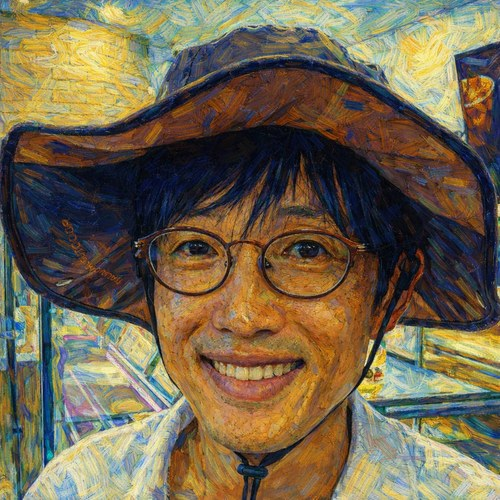

소개
지광습

교수
고려대학교 건축사회환경공학부
고려대학교에서 토목·구조공학을 가르치고 연구하고 있다.
구조공학과 역학 지식을 바탕으로 연구를 하고 있다. 구조 및 계산역학, 파괴와 손상, 해양구조물과 해상풍력, 구조물의 내구성, 그리고 최근에는 공학정보의 디지털 전환까지 연구주제가 넓어졌다.
얼핏 보면 서로 상당히 다른 분야처럼 보인다. 하지만 내가 궁금해하는 질문은 대체로 비슷하다.
관찰된 공학적 결과 뒤에는 어떤 역학이 있으며, 그것을 실제로 사용할 수 있을 만큼 어떻게 이해할 것인가?
이 질문을 따라가다 보니 파괴역학과 비선형 계산방법에서 해상풍력 구조물, 신축성 전자소자, 공학적 의사결정까지도 연구가 이어졌고, 최근에는 AI와 구조화된 공학지식까지 다루게 되었다.
공학교육도 내게 중요한 일이다. 특히 식을 외우는 대신 그 식이 왜 그런 형태를 가지며 물리적으로 무엇을 뜻하는지 연결해서 역학을 이해하는 방법에 관심이 많다.
왜 Zi-SEM을 만들었나
연구논문은 연구결과를 기록하는 데 반드시 필요하다. 하지만 하나의 공학적 아이디어가 어떻게 생겨났고 왜 그런 결과가 나왔는지를 충분히 설명하기에는 항상 좋은 형식은 아니다.
논문은 간결해야 하고, 상당한 배경지식을 독자가 이미 알고 있다고 가정한다. 무엇을 했고 어떤 결과를 얻었는지는 자세히 쓰지만, 다음과 같은 질문에는 충분한 공간을 쓰기 어렵다.
- 애초에 왜 이 문제를 연구했는가?
- 왜 이 결과가 물리적으로 말이 되는가?
- 처음에는 어떤 결과를 예상했는가?
- 무엇이 예상 밖이었는가?
- 이 결과는 기본적인 역학과 어떻게 연결되는가?
- 엔지니어라면 이 연구에서 무엇을 기억해야 하는가?
Zi’s Structural Engineering & Mechanics (Zi-SEM)은 이런 이야기를 하기 위해 만들었다.
논문이나 교과서를 대신하려는 사이트는 아니다. 연구결과와 공학적 사고 사이의 빈틈을 메우는 것이 목적이다.
그래서 Zi-SEM을 관통하는 질문은 하나다.
왜 이 결과가 공학적으로 말이 되는가?
여기서는 무엇을 다루나
Zi-SEM은 크게 네 가지 주제로 구성되어 있다.
Research Explained
출판된 연구를 논문의 순서대로 요약하기보다, 그 연구를 시작하게 만든 공학적 질문, 결과를 만들어낸 물리적 메커니즘, 그리고 실제 공학적 의미를 중심으로 다시 설명한다.
특정 논문의 결과를 소개하는 데서 끝나는 것이 아니라, 그 연구가 끝난 뒤에도 남는 공학적 생각을 찾아내는 것이 목적이다.
Engineering Mechanics
구조역학, 재료역학, 파괴, 피로, 연속체역학, 계산역학 등을 다룬다.
식은 중요하다. 그러나 그 식이 왜 그런 형태를 가지는지, 물리적으로 무엇을 뜻하는지 이해할 때 비로소 제대로 쓸 수 있다.
Z-Diagram
Z Diagram은 내가 2004년 고려대학교에 부임하면서 학생들에게 역학을 좀 더 체계적으로 가르치기 위해 만든 틀이다.
역학을 가르치다 보면 학생들이 개별 공식은 알고 있는데, 막상 새로운 문제가 나오면 어디서 시작해서 어디로 가야 하는지 모르는 경우가 많다. 그래서 역학문제를 풀 때 현재 어디에 있고 다음에는 어디로 가야 하는지를 보여주는 일종의 역학의 내비게이션 맵을 만들고 싶었다.
그 중심에는 다음의 관계가 있다.
\[ F \;\longleftrightarrow\; \sigma \;\longleftrightarrow\; \varepsilon \;\longleftrightarrow\; u. \]
힘, 응력, 변형률, 변위는 각각 따로 존재하는 양이 아니다. 평형, 구성관계, 적합조건을 통해 서로 연결되어 있다. 무엇이 주어지고 무엇을 구해야 하는가에 따라
\[ F \rightarrow \sigma \rightarrow \varepsilon \rightarrow u \]
로 갈 수도 있고,
\[ u \rightarrow \varepsilon \rightarrow \sigma \rightarrow F \]
로 거꾸로 갈 수도 있다.
에너지는 이 관계를 또 다른 관점에서 연결한다. 힘과 변위, 응력과 변형률은 각각 에너지 켤레(energy-conjugate) 관계에 있다. 따라서 일과 에너지를 이용하면 같은 역학문제를 다른 경로로 바라볼 수도 있다.
나는 이 맵을 만든 이후 내가 강의하는 거의 모든 역학 관련 과목에서 사용하고 있다. 기초적인 재료역학이나 구조역학뿐 아니라 더 고급 역학을 설명할 때도 기본적인 지도는 같다.
연구에서도 마찬가지다. 실제 연구에서는 구성모델이 복잡해지고, 비선형성이 들어가며, 유한요소법과 같은 계산방법을 사용한다. 그래도 문제를 바라볼 때 나는 이 맵을 여러 형태로 계속 사용한다.
여기서 중요한 것은 강의실의 역학과 연구실의 역학이 서로 다른 것이 아니라는 점이다. 연구문제는 훨씬 복잡해질 수 있지만 그 밑에 있는 역학의 연결관계는 그대로 남아 있다.
결국 Z Diagram은 외워야 할 또 하나의 공식이 아니다. 역학문제에서 지금 내가 어디에 있고, 어디로 가야 하며, 어떤 물리법칙을 따라가야 하는지를 보여주는 지도다.
LaTeX & Writing
연구는 다른 사람에게 전달되어야 한다.
이곳에서는 과학·공학 글쓰기, LaTeX, 그림, 기술 발표, 그리고 새롭게 등장하는 AI 기반 공학 workflow도 다룬다.
연구논문은 단지 올바른 결과를 담고 있는 문서여서는 부족하다. 다른 연구자가 질문이 무엇이었는지, 어떤 증거가 있는지, 그리고 그 증거로 어떤 답에 도달했는지 따라갈 수 있어야 한다.
연구와 교육의 관심 분야
현재 관심을 두고 있는 분야는 다음과 같다.
- 구조역학
- 계산역학
- 파괴 및 손상역학
- 구조물과 고체의 비선형해석
- 해양구조물 및 해상풍력
- 구조물 내구성
- 디지털 엔지니어링과 공학지식
- 공학 분야의 AI 활용
- 공학교육
- 과학·기술 커뮤니케이션
내 연구주제는 계속 변하고 확장된다. 그래도 그 많은 주제를 연결하는 공통언어는 여전히 역학이다.
이 사이트의 글을 읽을 때
이 사이트에는 내가 수행한 연구를 설명하는 글도 있고, 일반적인 공학역학이나 연구방법을 다루는 글도 있다.
연구를 설명할 때는 가능한 한 다음 세 가지를 구분하려고 한다.
- 연구에서 실제로 확인된 것은 무엇인가,
- 그 결과를 공학적으로 나는 어떻게 해석하는가,
- 그리고 그 결과로부터 어떤 더 넓은 가능성을 생각할 수 있는가.
이 구분은 중요하다.
공학적 이해는 결과 하나를 얻었다고 끝나는 것이 아니다. 그 결과가 무엇을 뜻하는지, 어디까지 적용할 수 있는지, 그리고 어디부터는 적용할 수 없는지 묻는 데서 더 깊어진다.
연구실 밖 이야기
공학은 결국 사람이 하는 일이다. 연구실, 강의실, 학회장에서만 중요한 관계가 만들어지는 것도 아니다. 토목인으로 살아오면서 사람들과 만나고 함께해 온 이야기 가운데 기록해 둘 만한 것들은 이곳에 가끔 남겨두려고 한다.
- 테니스로 이어지는 토목인들 — KSCE FIRE DRAGONS — 2012년 시작한 대한토목학회 테니스회가 세대와 직역, 기관을 넘어 토목인들을 이어 온 이야기.
연구자 프로필
논문과 인용정보는 다음에서 확인할 수 있다.
연구실 오리엔테이션
연구실에 새로 합류하거나 관심이 있는 학생은 SEM Lab 연구실 오리엔테이션을 읽어보면 된다. 연구분야뿐 아니라 연구를 바라보는 방식, 일하는 방법, 연구자료 관리, 프로젝트에 대한 책임, 글쓰기, 협업과 저자 원칙을 정리해 두었다.
다른 링크
지광습
고려대학교
영문 논문에서는 Goangseup Zi 또는 G. Zi로 표기한다.